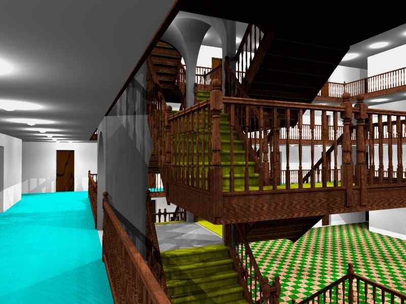

Table of Contents
Source: Image 63 entitled Short Wide Flight of Stone Steps in 'staircase_documentimages.pov'.
|
Source: Image 50 entitled Banner Image in 'staircase_documentimages.pov'.
|
Source: Image 56 entitled Default Spiral with Central Core in 'staircase_documentimages.pov'.
|
Source: Scene File 'staircase_example03.pov'.
|
Source: Scene File 'staircase_spiralexample01.pov'.
|

Source: Scene File 'staircase_example03.pov' with staircase camera.
|

Source: Scene File 'staircase_spiralexample02.pov'.
|
Downloading Documentation
A zipped archive containing the StairCase macro files and this documentation can be downloaded from http://lib.povray.org. Search for 'StairCase'.
Note. The online and downloaded copies of this document use very small images, many at a resolution of 160x120, to save on download size and time. The file 'staircase_documentimages.pov' is designed to regenerate most of the PNG images using the animation loop, enabling you to automatically regenerate those images at a higher resolution to improve image visibility and quality in the documentation if you wish. Using the +fn command line option you can generate PNG files directly from POV-Ray.
Printing
Each section of this document needs to be printed separately.
This page incorporates print specific style sheet definitions intended to help improve the format of this document when printed. This document should print correctly using the standard 'Print' menu option in your browser.
Certain content will be presented slightly differently when printed, for example hard page throws are
added to the print for each of the main sections.
{kind=link}
{kind=link}
{kind=link}
{kind=link}
{kind=link}
{kind=link}